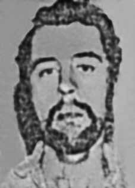

Lucimar
Brandão
Guimarães
CIRCUNSTÂNCIAS DA MORTE
Lucimar Brandão Guimarães morreu no dia 31 de julho de 1970. Havia sido preso pela Polícia Militar de Minas Gerais no dia 26 de janeiro, quando o apartamento onde se encontrava foi invadido. Segundo a versão oficial, constante de relatório juntado ao IPM nº 32/70, a morte de Lucimar teria decorrido dos graves ferimentos sofridos em um acidente envolvendo a viatura que, no dia 1o de fevereiro de 1970, o transportava para outra localidade, sob a responsabilidade do capitão Eneas Antonio de Azevedo. Na viatura estariam ainda o sargento da Polícia Militar Waldemar Moreira dos Santos e dois soldados, Valdete Ferreira de Souza e Rubens Antônio Ferreira, este último, condutor do veículo. Ainda conforme o relatório do acidente, elaborado pelo capitão Alaor Ribeiro, Lucimar teria sido visto dentro da viatura somente horas depois, apesar de os militares feridos terem sido conduzidos ao hospital. O mesmo IPM, que estava sob responsabilidade do capitão Daniel Aguiar Campos, não informa se Lucimar foi socorrido, mas apenas que permaneceu ferido na viatura. Lucimar teria sido levado ao hospital militar horas depois e permanecido imobilizado, devido a fraturas na coluna vertebral, até seu falecimento. Entretanto, em relatório de 1974 da Subcomissão Para a Prevenção da Discriminação e Proteção às Minorias da Comissão de Direitos Humanos da ONU, consta relato da expresa política Mara Curtis Alvarenga de que Lucimar Brandão morreu em consequência do uso de instrumento de tortura conhecido como “mesa elástica”, a qual teria acarretado fratura em sua coluna vertebral, deixando-o paralisado até a sua morte. Outro depoimento de destaque para interpretação do caso é o de José Roberto Borges Champs, que esteve preso junto a Lucimar. Segundo ele no dia 28 de janeiro, vi quando chegaram trazendo o companheiro Lucimar Brandão Guimarães, que se mostrava em condições físicas normais, não apresentando qualquer debilidade; que horas depois, a mesma equipe de agentes policiais voltou para buscá-lo; que depois disso nunca mais vi Lucimar […] entre os agentes, estavam o capitão Pedro Ivo Gonçalves Ferreira e o tenente R- 2 Carlos Alberto Delmenezzi. Ainda no mesmo depoimento, José Roberto relata que, quando esteve preso no 8º BG da PM, recebeu a notícia, de um sentinela, de que este teria visto um “terrorista” agonizando no Hospital Militar. O sentinela afirmou que parecia se tratar de um homem muito mais velho por conta das debilidades físicas e que, entre outros ferimentos, Lucimar tinha a coluna quebrada. A mãe de Lucimar confirma que, ao visitá-lo no hospital, soube que seu filho havia sido seviciado. Lucimar faleceu no Hospital Militar de Belo Horizonte, onde se encontrava há cerca de 5 (cinco) meses, e em sua certidão de óbito consta como causa da morte caquexia, distrofia e anemia, sem se estabelecer um nexo causal com a origem dos ferimentos. Durante a apreciação do caso pela CEMDP houve pedido de vista de Paulo Gustavo Gonet Branco, após voto contrário do relator general Osvaldo Gomes. Gonet Branco concluiu que Lucimar não morreu por “causas naturais”, ainda que o acidente tenha realmente acontecido. Pela interpretação de Gonet Branco, a morte em acidente envolvendo veículo policial também caracteriza o conceito de dependência policial ou assemelhada, enquadrando o caso na Lei n o 9.140/1995. De qualquer forma, é importante observar os depoimentos, que apontam para a tortura como causa dos ferimentos que levaram à sua morte. O corpo de Lucimar Brandão Guimarães foi sepultado no cemitério São Francisco Xavier, na cidade do Rio de Janeiro (RJ).
Lucimar Brandão Guimarães died on July 31, 1970. He had been arrested by the Military Police of Minas Gerais on January 26, when the apartment where he was staying was invaded. According to the official version, contained in a report attached to IPM nº 32/70, Lucimar's death resulted from serious injuries suffered in an accident involving the vehicle that, on February 1, 1970, transported him to another location, under the responsibility of captain Eneas Antonio de Azevedo. Also in the vehicle were Military Police Sergeant Waldemar Moreira dos Santos and two soldiers, Valdete Ferreira de Souza and Rubens Antônio Ferreira, the latter, driver of the vehicle. Still according to the accident report, prepared by captain Alaor Ribeiro, Lucimar would have been seen inside the vehicle only hours later, despite the injured soldiers having been taken to the hospital. The same IPM, which was under the responsibility of captain Daniel Aguiar Campos, does not report whether Lucimar was rescued, but only that he remained injured in the vehicle. Lucimar was reportedly taken to the military hospital hours later and remained immobilized, due to spinal fractures, until his death. However, in a 1974 report by the Subcommittee for the Prevention of Discrimination and Protection of Minorities of the UN Human Rights Commission, there is a report by former politician Mara Curtis Alvarenga that Lucimar Brandão died as a result of the use of a torture instrument known as an “elastic table”, which would have caused a fracture in his spinal column, leaving him paralyzed until his death. Another prominent testimony for the interpretation of the case is that of José Roberto Borges Champs, who was arrested alongside Lucimar. According to him, on January 28th, I saw when they arrived bringing their companion Lucimar Brandão Guimarães, who appeared to be in normal physical condition, not showing any weakness; that hours later, the same team of police officers returned to look for him; that after that I never saw Lucimar again [...] among the agents were Captain Pedro Ivo Gonçalves Ferreira and Lieutenant R-2 Carlos Alberto Delmenezzi. Still in the same statement, José Roberto reports that, when he was imprisoned in the 8th BG of the PM, he received news from a sentry that he had seen a “terrorist” dying in the Military Hospital. The sentry stated that he appeared to be a much older man due to his physical weaknesses and that, among other injuries, Lucimar had a broken back. Lucimar's mother confirms that, when visiting him in the hospital, she learned that her son had been abused. Lucimar died at the Military Hospital of Belo Horizonte, where he had been for approximately 5 (five) months, and his death certificate listed cachexia, dystrophy and anemia as the cause of death, without establishing a causal link with the origin of the injuries. During the assessment of the case by CEMDP, Paulo Gustavo Gonet Branco requested a review, after a dissenting vote from general rapporteur Osvaldo Gomes. Gonet Branco concluded that Lucimar did not die from “natural causes”, even though the accident actually happened. According to Gonet Branco's interpretation, death in an accident involving a police vehicle also characterizes the concept of police dependency or similar, framing the case in Law No. 9,140/1995. In any case, it is important to observe the testimonies, which point to torture as the cause of the injuries that led to his death. The body of Lucimar Brandão Guimarães was buried in the São Francisco Xavier cemetery, in the city of Rio de Janeiro (RJ).
Lucimar Brandão Guimarães murió el 31 de julio de 1970. Había sido detenido por la Policía Militar de Minas Gerais el 26 de enero, cuando el apartamento donde se alojaba fue invadido. Según la versión oficial, contenida en un informe adjunto al IPM nº 32/70, la muerte de Lucimar se debió a las graves lesiones sufridas en un accidente del vehículo que, el 1 de febrero de 1970, lo transportaba a otro lugar, a cargo del capitán Eneas Antonio de Azevedo. En el vehículo también estaban el sargento de la Policía Militar Waldemar Moreira dos Santos y dos militares, Valdete Ferreira de Souza y Rubens Antônio Ferreira, este último, conductor del vehículo. También según el parte del accidente, elaborado por el capitán Alaor Ribeiro, Lucimar habría sido visto en el interior del vehículo sólo horas después, a pesar de que los militares heridos fueron trasladados al hospital. El mismo IPM, que estaba a cargo del capitán Daniel Aguiar Campos, no informa si Lucimar fue rescatado, sólo que permaneció herido en el vehículo. Lucimar habría sido trasladado al hospital militar horas después y permaneció inmovilizado, debido a fracturas de columna, hasta su muerte. Sin embargo, en un informe de 1974 del Subcomité para la Prevención de Discriminaciones y Protección a las Minorías de la Comisión de Derechos Humanos de la ONU, hay un informe de la expolítica Mara Curtis Alvarenga que afirma que Lucimar Brandão murió como consecuencia del uso de un instrumento de tortura conocido como “mesa elástica”, que le habría provocado una fractura en la columna vertebral, dejándolo paralizado hasta su muerte. Otro testimonio destacado para la interpretación del caso es el de José Roberto Borges Champs, quien fue detenido junto a Lucimar. Según él, el día 28 de enero vi cuando llegaron trayendo a su compañero Lucimar Brandão Guimarães, quien parecía estar en condiciones físicas normales, sin presentar debilidad alguna; que horas después, el mismo equipo policial volvió a buscarlo; que después de eso no volví a ver a Lucimar [...] entre los agentes estaban el Capitán Pedro Ivo Gonçalves Ferreira y el Teniente R-2 Carlos Alberto Delmenezzi. Aún en el mismo comunicado, José Roberto relata que, cuando estaba recluido en el 8º BG de la PM, recibió de un centinela la noticia de que había visto morir a un “terrorista” en el Hospital Militar. El centinela afirmó que parecía un hombre mucho mayor debido a sus debilidades físicas y que, entre otras lesiones, Lucimar tenía la espalda rota. La madre de Lucimar confirma que, al visitarlo en el hospital, se enteró de que su hijo había sido abusado. Lucimar falleció en el Hospital Militar de Belo Horizonte, donde permaneció aproximadamente 5 (cinco) meses, y en su certificado de defunción figuran como causas de muerte caquexia, distrofia y anemia, sin establecer nexo causal con el origen de las lesiones. Durante la evaluación del caso por parte del CEMDP, Paulo Gustavo Gonet Branco solicitó una revisión, tras el voto disidente del relator general Osvaldo Gomes. Gonet Branco concluyó que Lucimar no murió por “causas naturales”, aunque el accidente realmente ocurrió. Según la interpretación de Gonet Branco, la muerte en accidente de un vehículo policial también caracteriza el concepto de dependencia policial o similar, enmarcando el caso en la Ley nº 9.140/1995. De todas formas, es importante observar los testimonios, que señalan la tortura como la causa de las lesiones que provocaron su muerte. El cuerpo de Lucimar Brandão Guimarães fue enterrado en el cementerio São Francisco Xavier, en la ciudad de Río de Janeiro (RJ).